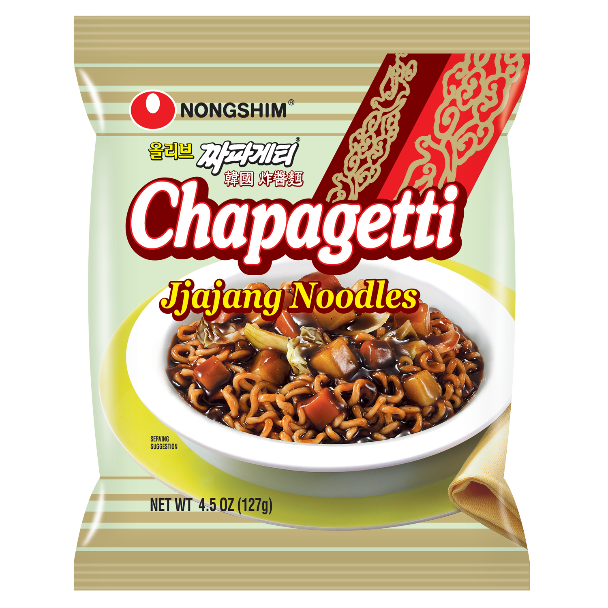
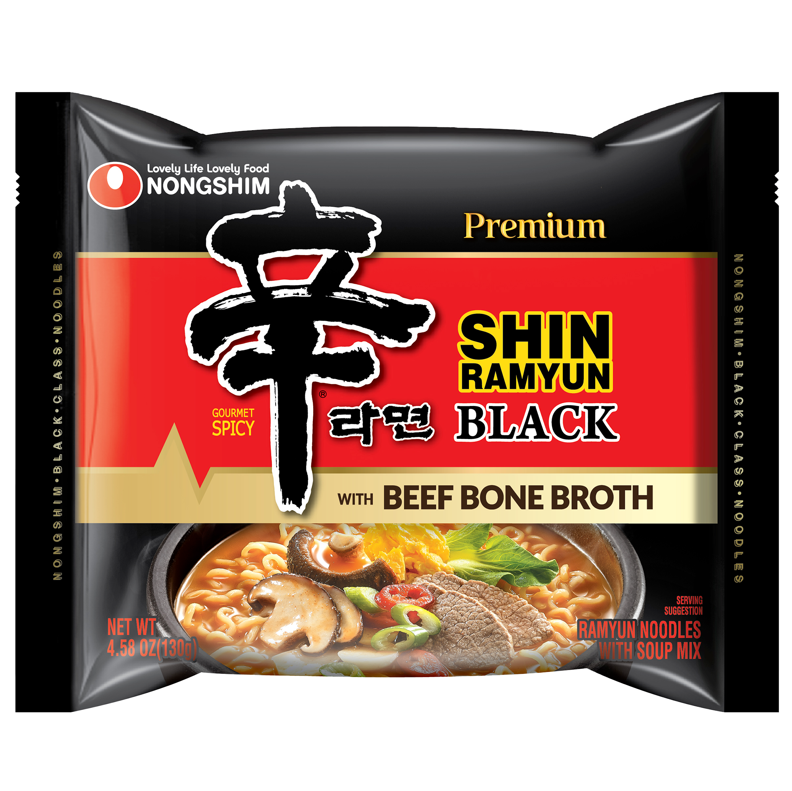
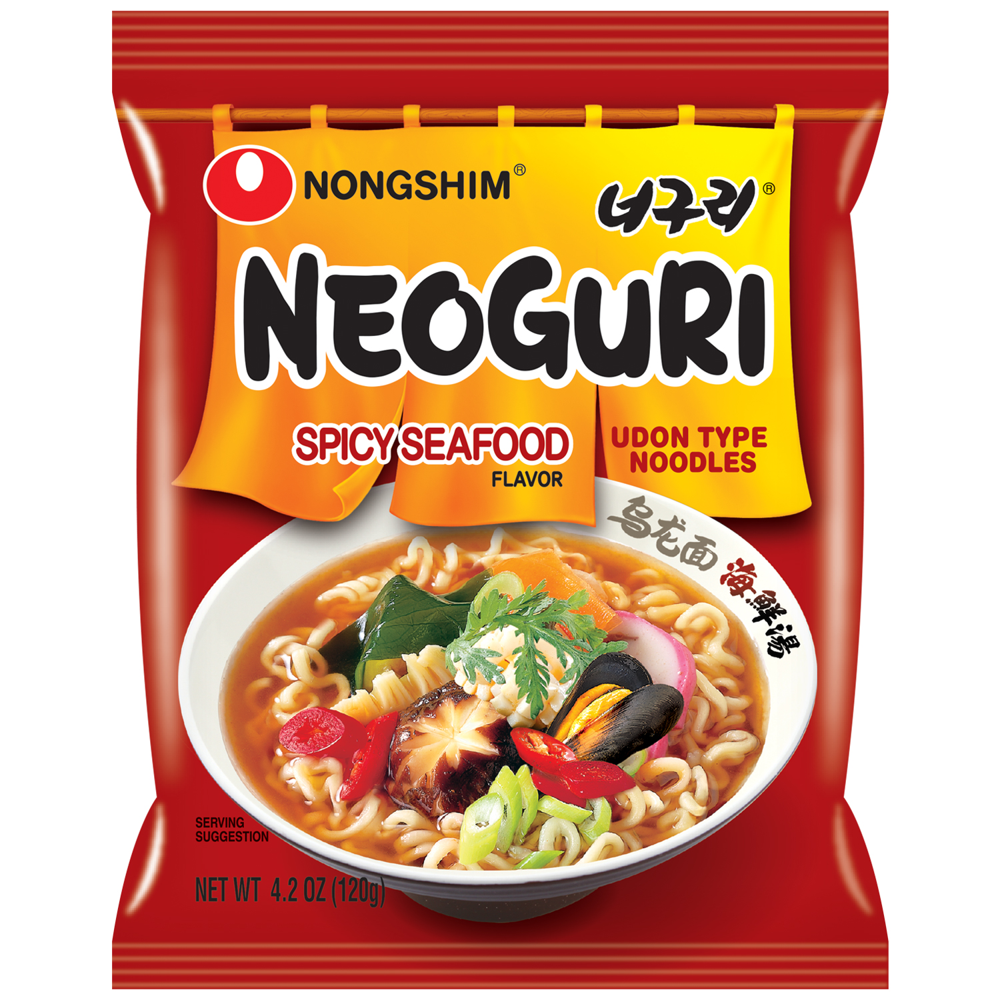

The reason that I can make this website and eat instant ramen is because of a man named Momofuku Ando It was created after World War II. Ando wanted to create a food that was cheap, easy to make, and tasty while filling. In 1958, the first instant ramen created: "Chikin Ramen". The breakthrough method was flash-frying noodles. This dehydrated the noodles, and allowed the noodles to be quickly rehydrated with hot water. Then in 1971, Nissin created the Cup Noodles. All that needed to be done was adding hot water, and no bowl was needed. This invention made instant ramen a global sensation.

Chapagetti

Black Shin Ramen

Neoguri
I have always been a fan of noodles in general. However, becoming a fan of instant ramen started in college. I was a with little money and little time. During college, eating was purely to survive. The food that tasted the best and took only a couple minutes to make and eat was instant ramen. My go to during that time was Cup Noodles, but if I was feeling lucky then I would grab a Black Shin Bowl. It's only after college that I discovered a multitude of different kinds of instant ramens.